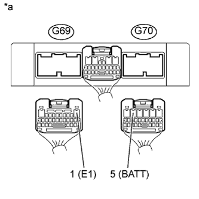

DTC P0560 Напряжение бортовой сети |
| Код DTC | Условие обнаружения DTC | Неисправный участок |
| P0560 | Обрыв в цепи вспомогательного источника питания TCM (логика диагностирования за 1 поездку). |
|
| 1.ПРОВЕРЬТЕ DTC (DTC P0560 СИСТЕМЫ ECD) |
Подсоедините портативный диагностический прибор к DLC3.
Включите зажигание (IG).
Включите портативный диагностический прибор.
Войдите в следующие меню: Powertrain / Engine / DTC.
С помощью портативного диагностического прибора считайте коды DTC.
| Результат | Следующий шаг |
| DTC не выводятся. | А |
| DTC P0560 (система ECD) выводится (для моделей с DPF) | B |
| DTC P0560 (система ECD) выводится (для моделей без DPF) | C |
|
| ||||
|
| ||||
| А | |
| 2.ПРОВЕРЬТЕ TCM (ПИТАНИЕ, МАССА) |
|  |
Отсоедините разъемы G69 и G70 TCM.
Измерьте напряжение в соответствии со значениями, приведенными в таблице.
| Контакты для подключения диагностического прибора | Состояние | Заданные условия |
| G70-5 (BATT) - G69-1 (E1) | Всегда | 11-14 В |
Измерьте сопротивление в соответствии со значениями, приведенными в таблице ниже.
| Контакты для подключения диагностического прибора | Состояние | Заданные условия |
| G69-1 (Е1) - масса | Всегда | Менее 1 Ом |
| *a | Вид сзади разъема со стороны жгута проводов (к TCM) |
|
| ||||
| OK | ||
| ||